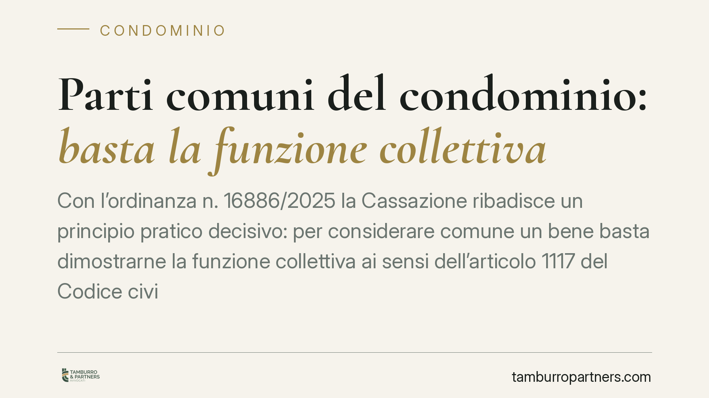

Parti comuni del condominio: basta la funzione collettiva
Con l'ordinanza n. 16886/2025 la Cassazione ribadisce un principio pratico decisivo: per considerare comune un bene basta dimostrarne la funzione collettiva ai sensi dell'articolo 1117 del Codice civile. Chi rivendica la proprietà esclusiva deve invece fornire una prova documentale rigorosa. Una ripartizione dell'onere probatorio che incide su controversie e delibere.

Il principio affermato dalla Cassazione
La Seconda Sezione civile della Cassazione, con l'ordinanza n. 16886 del 24 giugno 2025, torna su un tema ricorrente nel contenzioso condominiale: a chi spetta provare la natura comune o esclusiva di un bene.
La risposta della Corte è netta. Per affermare che un bene appartiene a tutti i condomini è sufficiente dimostrare che esso svolge una funzione collettiva, cioè che serve all'uso o al godimento comune secondo lo schema dell'articolo 1117 del Codice civile. Il condominio, in altri termini, non deve esibire un titolo di acquisto specifico: la destinazione oggettiva del bene al servizio comune è di per sé sufficiente.
Viceversa, chi sostiene di esserne proprietario esclusivo ha l'onere di superare questa presunzione, fornendo una prova documentale contraria. Non bastano affermazioni generiche o comportamenti tollerati nel tempo.
Inquadramento normativo
L'articolo 1117 c.c. elenca le parti dell'edificio che si presumono comuni: suolo, fondazioni, muri maestri, tetti, scale, androni, cortili, impianti e, più in generale, tutte le parti necessarie all'uso comune o destinate al servizio collettivo.
Si tratta di una presunzione di comunione: la legge considera comuni questi beni salvo che un titolo (un atto di provenienza, il regolamento contrattuale, un rogito) disponga diversamente. La parola "titolo" è centrale. La Cassazione precisa che il titolo idoneo a escludere la comunione deve avere natura documentale e contenuto chiaro, non desumibile per via interpretativa o presuntiva.
Il ragionamento si lega a un consolidato orientamento: la presunzione dell'art. 1117 opera in base alla destinazione funzionale del bene al momento della formazione del condominio. Chi rivendica la proprietà esclusiva deve dimostrare che, già in quel momento, il bene era stato sottratto alla destinazione comune.
Implicazioni pratiche
Per il condominio la pronuncia è favorevole sul piano processuale. In giudizio, l'amministratore che agisce a tutela di una parte comune non deve ricostruire la catena dei titoli di proprietà: è sufficiente provare la funzione collettiva del bene contestato.
Per il singolo condomino che intende far valere una proprietà esclusiva, invece, l'asticella probatoria si alza. Dichiarazioni, usi personali protratti nel tempo o la semplice circostanza di avere l'accesso al bene non bastano. Serve un documento che attribuisca con chiarezza la titolarità esclusiva: tipicamente l'atto di acquisto o un regolamento condominiale di natura contrattuale.
La distinzione è rilevante anche in sede assembleare. Quando l'assemblea delibera su un bene la cui natura è controversa — un sottoscala, un locale, un'area di sedime — la presunzione di comunione orienta la legittimità della decisione. Il condomino che si oppone invocando la proprietà esclusiva dovrà portare il titolo, non limitarsi a contestare.
Attenzione, infine, al profilo temporale. La funzione collettiva va valutata con riferimento all'origine del condominio. Modifiche successive, anche se tollerate per anni, non trasformano automaticamente un bene comune in bene esclusivo in assenza di un titolo idoneo o di un'usucapione validamente provata.
Cosa fare in concreto
- Verificate i titoli prima di rivendicare. Chi intende sostenere la proprietà esclusiva di una parte dell'edificio deve recuperare l'atto di acquisto e il regolamento contrattuale, controllando che indichino espressamente il bene come esclusivo.
- Documentate la funzione collettiva. Per il condominio, raccogliete planimetrie, regolamento e documentazione che evidenzino la destinazione del bene al servizio comune.
- Non confondete uso e proprietà. Consigliamo di distinguere con chiarezza l'utilizzo di fatto di un bene dalla sua titolarità giuridica: il primo non fonda il secondo.
- Valutate l'usucapione con cautela. Se la pretesa esclusiva si basa sul possesso prolungato, verificate con un legale se ricorrono i presupposti, difficili da provare in ambito condominiale.
- Inquadrate le delibere a rischio. Prima di deliberare su beni dalla natura incerta, chiedete una verifica preventiva per ridurre il rischio di impugnazioni.
La pronuncia conferma una regola di buon senso processuale: chi vuole derogare alla comunione deve dimostrarlo, e deve farlo con documenti.
Ogni condominio ha una storia a sé.
Se gestisci un'amministrazione e vuoi un confronto su una specifica questione condominiale, scrivi allo studio. Ti rispondiamo entro un giorno lavorativo.